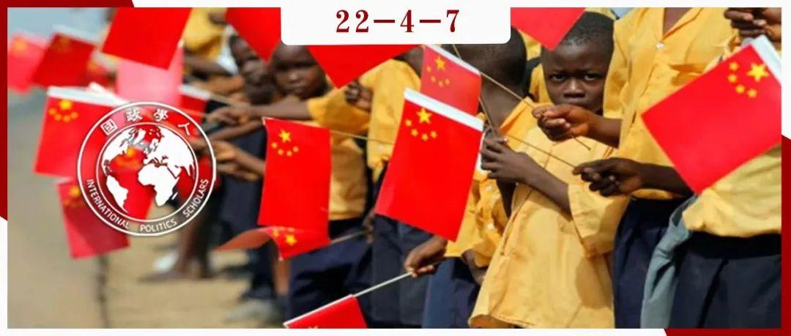

收录于合集

中国、非洲和国际援助体系：对新自由主义世界秩序的挑战？
作者： 沙奎尔·伊费达约·吉尔平（Shaquille Ifedayo Gilpin）是北京大学—伦敦政治经济学院国际事务专业双硕士。研究方向为中非关系与国际政治经济。
编译： 杨影淇（国政学人编译员，南京大学国际关系研究院）
来源： Gilpin, S. I. (2021). China, Africa and the International Aid System: A Challenge to (the Norms Underpinning) the Neoliberal World Order? Journal of Asian and African Studies. https://doi.org/10.1177/00219096211063804.

导读
本文认为，中国的援助向非洲提供了一种不同于新自由主义意识形态的发展观念，为非洲国家带来了与全球经济脱钩、从资本主义世界经济体系的边缘地位中摆脱出来的机会，从而对新自由主义世界秩序提出了挑战。 作者指出国际援助体系是用于维护新自由主义世界秩序的机制之一，通过在欠发达的非洲国家输出带有西方意识形态和价值观的一系列援助措施，使西方国家能够操控非洲的经济发展进程和方向，从而维持西方在新自由主义世界体系中的中心地位。然而， 中国对非洲的援助致力于“授之以渔”，帮助非洲国家“自力更生”。这种发展优先、国家主导、不附带条件的务实路线为非洲国家提供了另一种有别于西方的发展思路。
**
**
通过审视学术界对中非援助关系褒贬不一的评价 ，作者认同中国援助对国际援助体系的补充作用和有力贡献，并强调了非洲国家发挥自主性对其摆脱边缘地位的重要作用。 本文叙述视角客观且包容，从 世界体系论 的角度出发为读者提供了一个审视中国对非援助影响力的路径。
正如作者指出的，非洲国家若想从援助当中获得发展就必须能够提出自己的要求。虽然文章认为可以通过区域集团发声的方式实现，但仍然存在两个问题。其一，非洲许多区域集团本身也接受了大量西方援助，这是否会限制非洲国家提出主张与需求的自主性？其二，族群认同强于民族国家认同是撒哈拉以南非洲的普遍状况，并且许多国家经历着长期动荡与战乱，在这样的情况下非洲国家政府也很难代表本国人民需求发声。因此，即使援助的价值观和路径逐渐多样化，非洲国家探索自身发展、摆脱边缘地位仍然任重道远。
中国作为全球发展参与者的地位日益提高，可能会为非洲提供经济发展的另一种政策选择，而这同时也围绕“自力更生”的观点形成了长期意识形态问题。从新自由主义的角度看，发展需要亲市场的经济改革、有利于民主化的政治改革、“善治”、公共部门改革、私有化、减贫、直接或间接采用那些可能会妨碍受援国成功制定和实施国内政策能力的新自由主义举措。相比之下， 由于中国的援助并不是被意识形态因素而是被实用主义因素所驱动，这可能为非洲国家提供更多的政策空间。在理论层面，它还可能通过使非洲国家有机会在不受西方国家影响的情况下，追求有利于经济增长和稳定的政策， 从而使非洲从当前全球经济体系中的边缘地位逐渐脱钩。
01
国际援助体系历史概览
国际援助体系是战后的一种现象，起源于美国的政治与经济野心。作为当时的主导力量，美国创造了一个保护与加强自身经济和安全利益的体系。这些制度与倡议背后的理念是，美国应该在充满活力的战后国际经济发展进程中领导世界。
鉴于对欧洲援助的成功，美国开始寻找其他援助对象。在杜鲁门总统任职时期，美国的目标有两个：一是通过改善不发达国家的生产，为美国创造市场。二是通过支持第三世界国家的发展来对抗苏联威胁。 由于非洲国家财政资源有限，缺乏国内储蓄，也没有吸引海外投资的物质和人力，外国援助被视为刺激其经济增长的唯一途径。 除此之外，美国还需要在欠发达地区“确保跨大西洋优先事项”，使边缘经济体更加接近西方国家（尤其是美国）及其治理和发展形式。在主导这一领域的过程当中，美国及其伙伴形成了管理国际援助体系的规范、范围和规则。
02
作为权力关系体系的国际援助体系和新自由主义世界秩序：理论视角
国际援助体系是全球发展资金体系的一部分，由一个资助集团或“善意的卡特尔”组成，根据资助者的一致性和某些规范与实践的协调，管理国际发展优惠资源的转移。 国际援助体系包括资助国和受援国，资助国包括经合组织中的发达国家，而受援国往往是“南方”的边缘国家。自出现以来，这一体系已成为塑造国际层面发展的强大全球权力关系综合体。国际援助体系鼓励非洲领导人通过依赖关系和资助者反复接触，限制其在西方国家权限之外追求发展战略的能力。 通过在边缘国家实施一套既定的社会经济发展理念，国际援助体系阻止了许多非洲国家有效应对一些对他们来说最具挑战性的发展问题。
什么构成了新自由主义世界秩序？ 首先，我们需要理解什么是“新自由主义”。在理论意义上， 新自由主义是指一系列旨在“将自由市场意识形态尽可能多地融入政治经济各个方面”的政策， 它基于自由市场机制是社会最优、高效、能自我调节并最终趋于平衡的信念。战后西方国家尤其是美国在所谓的“新自由主义霸权全球化扩张”中输出新自由主义思想，非洲国家则被迫接受。 新自由主义世界秩序是这些由西方援助组织和经济思想定义、调解、维护与重复的全球不对称权力关系的结果。
世界体系分为中心国家和边缘国家，由于非洲国家作为边缘国家融入世界体系，它们依赖于外部力量。就本文而言，这些外部力量主要就是西方援助组织。当前的全球资本主义体系要求中心与边缘通过世界体系进行反复、长期的互动，国际援助体系是用于维护新自由主义世界秩序的机制之一。但本文认为， 援助只是西方国家以牺牲受援国为代价，持续服务于自身经济、政治和战略利益的一种手段。 以新自由主义原则为指导的国际援助只会让西方国家有能力维持其对非洲社会经济发展速度和方向的影响与控制。
03
国际援助体系和新自由主义世界秩序的共生关系：经验证据
文章以20世纪90年代的棉花和马里为例，分析结构性制约对非洲国家的影响，进而证明国际援助体系和新自由主义世界秩序如何在实践中共同维护当前的全球经济体系。在这一时期，世界银行和国际货币基金组织倡导马里棉花产业私有化并主张放开定价体系，这使得马里的棉花价格依赖于世界市场。然而，国际货币基金组织由于国际市场的波动而严重扭曲了棉花价格，最终降低了马里及其棉花生产者的国内价格和收入。世界银行和国际乐施会（Oxfam International）的数据显示，这一政策直接导致家庭购买力的崩溃、贫困、粮食不安全的加剧以及债务的增加。
此外，1973年石油危机发生后不久，国际货币基金组织和世界银行向赞比亚提供的贷款增加了赞比亚的外债，使资助者能够对受援国实施越来越大的影响。作为债务减免的回报，赞比亚不得不采取新自由主义政策，如私有化、公共部门改革、放松管制等。这场债务危机进一步巩固了赞比亚在世界体系中的边缘地位，维持了新自由主义世界秩序。津巴布韦等其他国家也有类似之处，西方援助阻碍了他们的经济可持续性。
虽然在某些情况下，改善体制框架可能会通过为经济增长提供更稳定的环境，使某些非洲国家能够更好地利用西方援助。然而，他们是否能够通过创建新自由主义世界秩序一方提供的援助从当前世界体系中的边缘位置脱身？作者认为， 由于“北”与“南”的关系要求非洲大陆保持这种边缘地位，世界资本主义制度的性质使非洲几乎不可能离开它追求有利于其环境的政策，从而实现真正的社会经济发展。
04
中国对非洲的援助：与传统资助方援助的规范差异
中国对非洲的援助对新自由主义世界秩序提出了挑战，为国际援助和发展提供了一种与西方援助不同的新思路。
首先，中国采取 发展优先 的援助方法。中国的援助旨在“改造社会，为其公民实现积极和可持续的发展成果”。相比之下，传统资助者倾向于提高援助的有效性，而不是发展的有效性。其次，中国在援助中采用了 国家主导 的发展模式，这与西方自由市场发展模式的意识形态形成了对比。最后，中国坚持 不干涉内政和“不附带任何条件” 的方针，为改变国际援助体系做出了贡献。
05
项目、基础设施和社会经济发展：非洲是否会与全球经济体系脱钩？
（1）批评
一些对中国援助的批评有助于解释中国对非洲的援助如何可能导致非洲与世界资本主义经济体系脱钩。其中一个突出的主张便是，中国正在通过诸如“一带一路倡议”和“债务陷阱外交”方法等创造一种新型的非洲依赖。
（2）言过其实？
然而，上述说法值得怀疑。来自中国借贷活动的经验数据不支持这种说法，许多非洲的债务问题实际上主要是由中国以外的贷款人造成的，对中国援助非洲的批评夸大了这种影响。中国援助马里和赞比亚的例子甚至表明， 即使在贫穷的非洲国家，如果采取发展优先的方法，并在建筑和基础设施方面进行投资，这些国家也可以获得发展。
事实上，中国仍然保持着工业优势，并且拥有更大的权力。然而，与将非洲置于初级商品出口国地位的“北”与“南”关系不同，中国在非洲的项目为非洲大陆提供了逐步发展工业、升级经济产出的机会。
（3）原住民
关于原住民问题，文献中经常提出的批评是中国雇佣自己的劳工从事它在非洲资助的项目。事实上，许多中国公司雇佣的大部分员工是原住民。现有的研究表明， 中国不仅没有剥夺非洲人的工作，反而为非洲创造了越来越多的就业机会。
（4）工业化努力
对许多非洲国家来说，理想状况是不让外国人影响其经济并控制其企业。然而，鉴于非洲缺乏国内资金和基础设施建设，中国在非洲大陆和全球范围内提高非洲生产和贸易能力的方式不可忽视。非洲国家可以利用这一发展增长的趋势和就业扩大的机会，促进自身的工业化。
中国在非洲的投资并不完全是利他的，中国主要从非洲进口自然资源，同时出口制成品。但从非洲的角度来看，拥有更多国际贸易伙伴的机会赋予了它们在国际贸易中更大的影响力以及经济增长的可能性。 通过“双赢”关系与平等伙伴关系，中国可能正在逐步将非洲从世界体系中的边缘地位解放出来。
（5）脱钩的可能性
与新自由主义世界秩序相比，中国并未强迫非洲国家接受它们不情愿实施的政策。相反，这些政策致力于促进非洲国家工业化。 只有在不平等交换减少之后，非洲国家在经济上变得更加独立，才可能与全球经济体系脱钩。
非洲国家若要实现脱钩，首先需要采取中国提供的与“北方”不同的新经济战略和价值观。其次，非洲国家必须控制自己的劳动力、农业发展，并做到粮食自给自足，逐步实现“以自我为中心的发展”。第三，改善资本管制可以让非洲国家拥有投资所有权。非洲人自己控制的国内自然资源生产权将使他们能够独立生产商品，甚至具有竞争力。第四，改善技术以促进更好的工业发展，这可以通过技术转让实现。要想从自然资源出口跃升到制成品出口，无疑需要中国的援助。最后，非洲国家对经济增长政策的控制是实现脱钩的又一重要因素。
由于当今经济全球化的相互依赖性，脱钩并不意味着非洲将完全切断与世界其他地区的联系。中国的投资与提高当地技能、提高其国内劳动生产率与整体基础设施发展的机会，为非洲提供了一个可能脱钩的起点。
06
国际援助体系的制度重组和另一个援助体系的诞生？
国际援助体系是否有可能进行制度重组或创建替代方案？中国有可能成为这一倡议的领导者吗？新自由主义会屈服于以中国为中心的“世界秩序”吗？
一方面，一些人认为，中国对非洲发展的援助，特别是在基础设施和投资方面，表明中国现在是新体系的实践者。中国的援助反映当地目标和优先事项、真正基于协商一致的国家共识而不是资助者的政策条件，这是发展中国家制定发展战略和刺激经济增长的关键，这对传统资助者援助的规范和理念提出了挑战。另一方面，也有人认为传统资助者在国际援助体系中仍然拥有权力。世界银行、联合国和非政府组织等西方多边组织以及主要资助国仍然主导着最具影响力的发展理念和战略的实施。
新自由主义世界秩序基于许多国家深刻遵守的规则和规范并得到西方援助的维持，其连续性很难抵制。然而，尽管新自由主义经济政策促进了中国经济的迅速崛起，但中国融入自由主义国际秩序不是源于对自由主义意识形态的认同，而是因为它符合中国的需要。中国不寻求重组国际援助体系，也不挑战支撑新自由主义世界秩序的规范，而是希望在这一体系中拥有更大的影响力。因此，中国对非洲的援助只是引入了对发展的新认识，使非洲国家有机会追求替代的发展政策，以此实现真正的独立并保护其政治选择。
作者认为 中国并不打算直接挑战新自由主义世界秩序和国际援助体系的规则和原则。 中国可能会选择只推广新理念，同时公开支持南南合作，从而接受新自由主义世界秩序。 未来，平等、国家主导的发展、发展优先的方法等因素可能会成为国家间更好合作的驱动力，而不是传统资助者经常使用的居高临下和新自由主义腔调。
07
结束语
中国对发展以及如何进行发展有自己的信念和想法，中非关系也是南南合作的正面案例。但 若要从中国的援助中获得发展，非洲领导人必须代表他们的人民和国家的需要，提出共同的要求和立场，这可以通过区域集团来实现。 区域集团将使非洲国家能够“利用彼此的支持，鼓励跨国信息交流”，并将提高它们在国际援助和发展谈判中的议价能力。
中国与非洲的援助关系确实挑战了新自由主义世界秩序，因为它改变了支撑国际发展的准则，西方资助者不再拥有支配非洲国家发展条件的霸权力量。 与全球资本主义经济“脱钩”的必要性支撑了非洲与中国的所有互动，确保非洲大陆在中非援助关系上的表现越来越好。然而，尽管有“双赢”和伙伴关系的说法，但必须承认中国和非洲之间存在着不对称关系。在权力方面，它不一定类似于“北”与“南”的关系，只是反映了非洲大陆和中国在经济发展与人力资本能力方面的不平衡。非洲国家必须有意识地面对这些因素，并实施相关政策。
词汇积累
脱钩 delink
新自由主义世界秩序 neoliberal world order (NLWO)
国际援助体系 international aid system (IAS)
共生关系 symbiotic relationship
审校 | 池佳曈 杨璐源
排版 | 苏伊文 王佳怡
文章观点不代表本平台观点，本平台评译分享的文章均出于专业学习之用, 不以任何盈利为目的，内容主要呈现对原文的介绍，原文内容请通过各高校购买的数据库自行下载。

国政学人
支持学术公益与知识传播
微信扫一扫赞赏作者 __赞赏
已喜欢，对作者说句悄悄话
取消 __
发送给作者
发送
最多40字，当前共字
上一页 1/3 下一页
长按二维码向我转账
支持学术公益与知识传播
受苹果公司新规定影响，微信 iOS 版的赞赏功能被关闭，可通过二维码转账支持公众号。